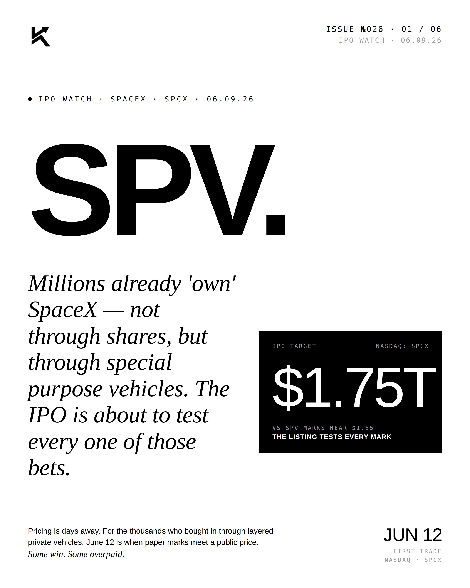
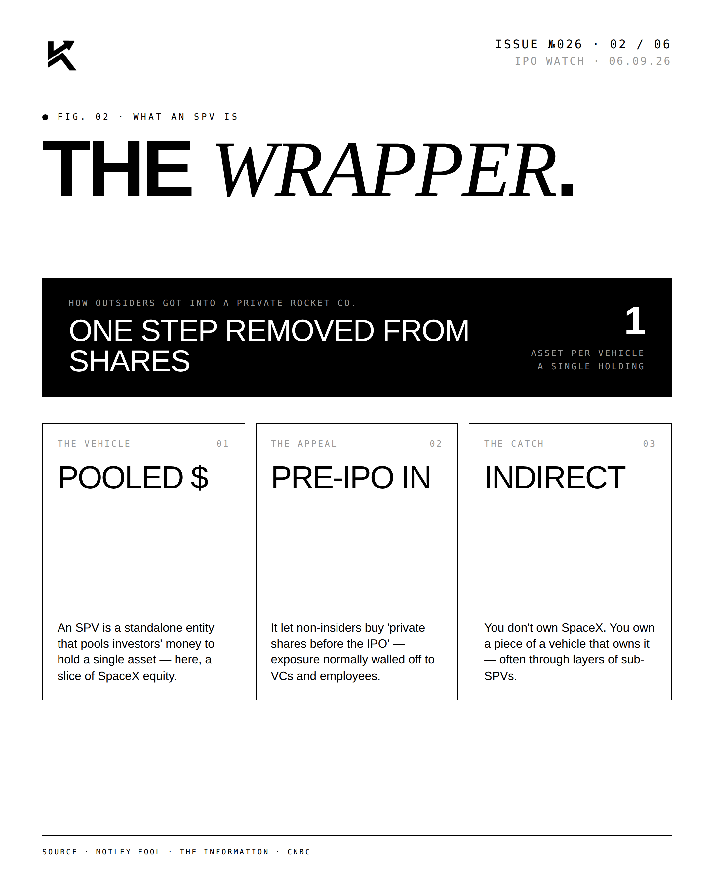
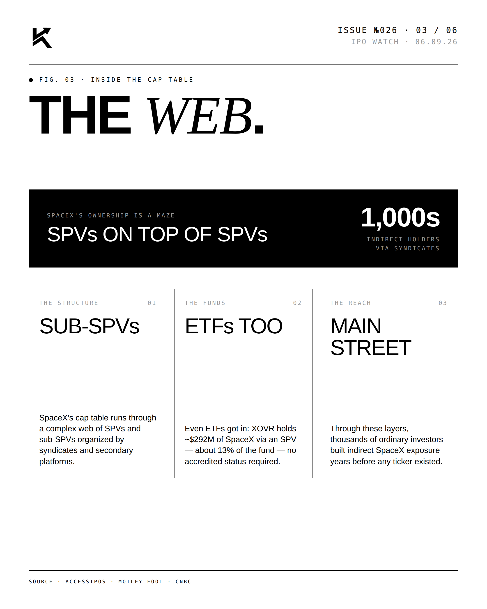
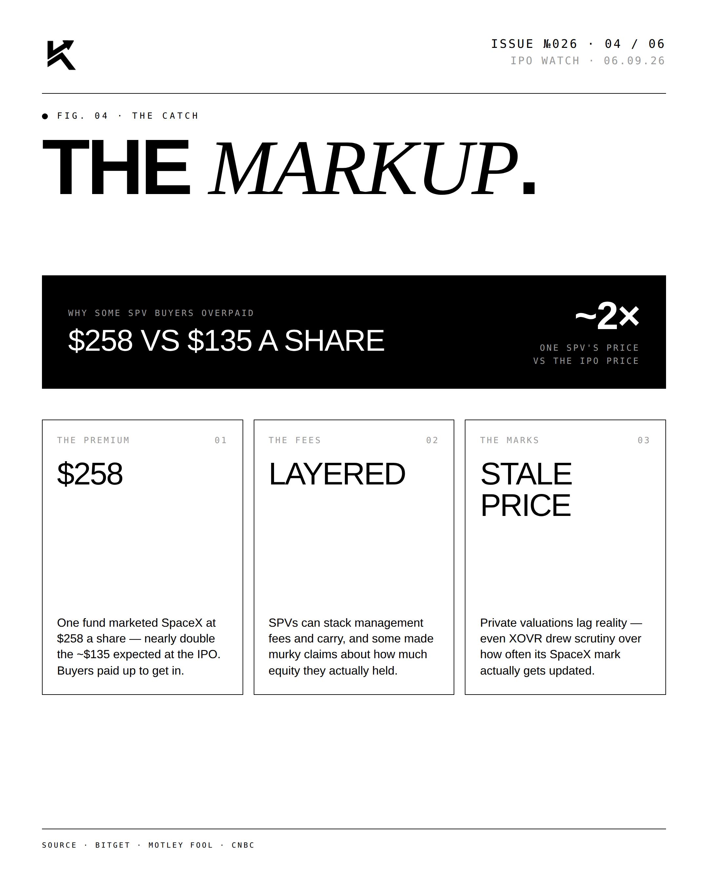
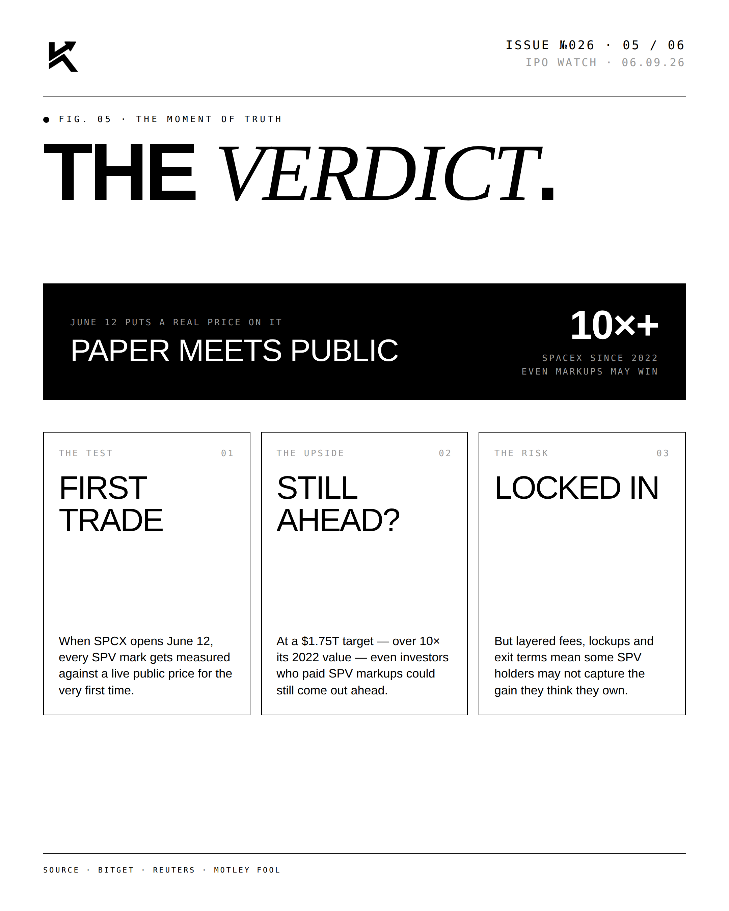
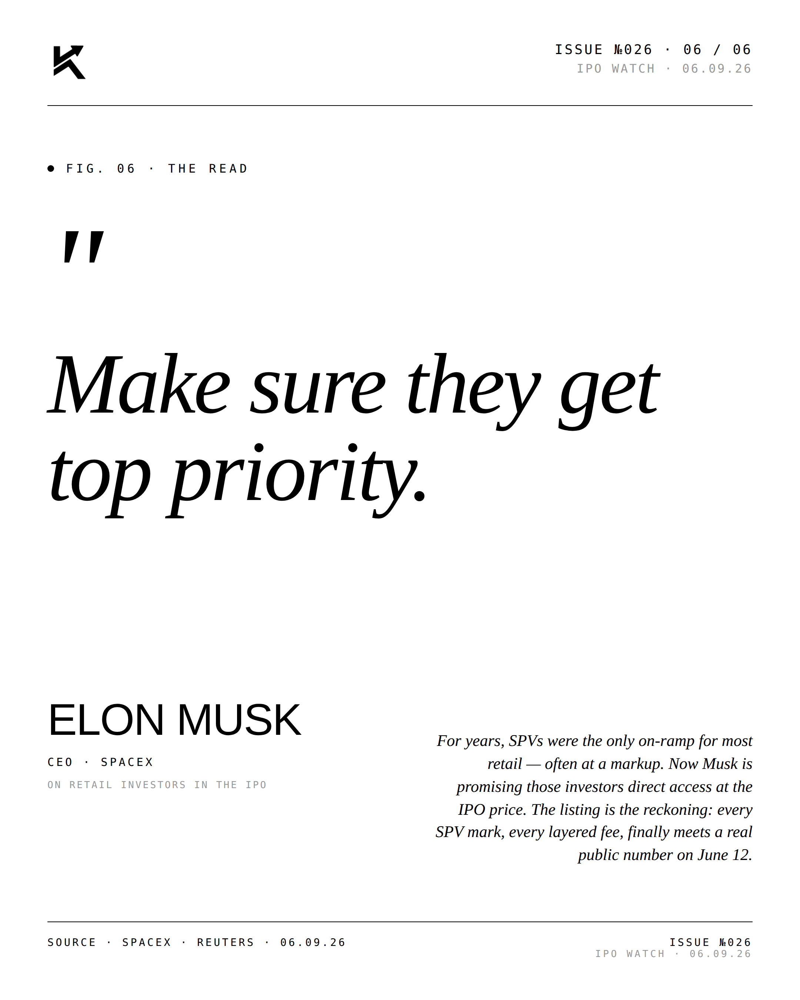

IPO WATCH · THE SHADOW CAP TABLE · 06.09.26
SPV.
Millions already "own" SpaceX — not through shares, but through special purpose vehicles. The IPO is about to test every one of those bets.

The Lead.
Years of secondary market layering means a complicated reconciliation at the price screen. Some SPV investors will mark up; others, well above the strike, will mark down.




"Make sure they
get top priority."ELON MUSKCEO · SPACEX · On the SPV holder allocation · June 9, 2026

Disclosure
The author is a Limited Partner in 1789 Capital, which holds a position in SpaceX. Personal commentary and editorial analysis. Not investment advice, not an offer or solicitation.